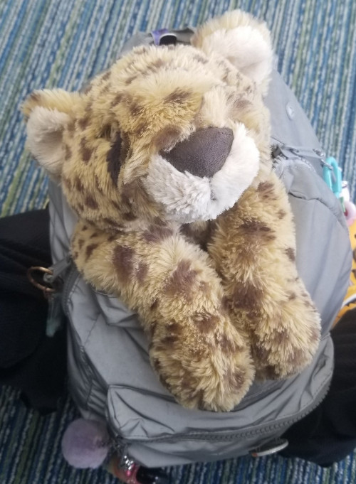
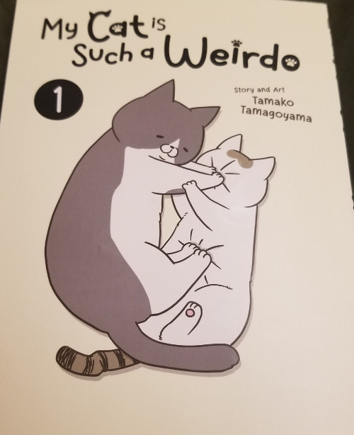

back home05.jan.24
i am finally home from my winter trip after a week or so of being gone. i was actually in florida visiting amusement parks such as disney world, universal, sea world, and busch gardens!  and my god am i so excited to share all of the pictures that i took and my thoughts on all the rides that i got in!
and my god am i so excited to share all of the pictures that i took and my thoughts on all the rides that i got in!
 i also have some extra stuff to show like some adorable plushies i bought so i could take them home with me.
but that will be on a future journal log since it's a lot of stuff and i am still pretty tired from the trip.
but overall i had such a great time with my lovely boyfriend  i'm super happy i got the chance to go since i've always been wanting to go to these amusement parks ever since i was little but never had the chance to.
i'm super happy i got the chance to go since i've always been wanting to go to these amusement parks ever since i was little but never had the chance to.
before going to the airport yesterday, we stopped at a barnes & noble because we don't have that here! i miss it so much. and i bought the CUTEST manga ever i believe.
it's called my cat is such a weirdo by tamako tamagoyama and it's basically just a bunch of comic strips about the mangaka's cats: ton-chan (left) and shino-san (right) and their silly little antics.
it's very simple but i have to recommend it for any cat lovers out there JUST for the pure charm and personality that radiates off of this manga with it's silly little drawings alongside the pictures of the real life cats!
i was giggling like a little kid the whole time i was reading this. i think it's a perfect little manga for when you want to take a breather and feel a little whimsy and joy. here's the official link if you want to check it out.
on another note, i hope everyone had a happy new years! i missed being on my computer for a bit so now i will probably check out what you guys have been up to!
i still have a few stuff to do in regards to going back to college and i am honestly a bit  about it. but i'm sure i'll be fine at the end of the day.
about it. but i'm sure i'll be fine at the end of the day.
nonetheless, i am pretty excited to be starting a new year!